Khám phá Việt Nam
Hành trình qua những danh lam thắng cảnh đẹp nhất từ Bắc chí Nam: vịnh đá vôi, phố cổ, hang động và những hòn đảo xanh ngọc.
9
Địa danh giới thiệu
5
Di sản UNESCO
3
Miền Bắc – Trung – Nam
3260
Km bờ biển
Điểm đến nổi bật
Những nơi bạn nhất định phải đến
Tuyển chọn các danh thắng được yêu thích nhất, từ di sản thế giới đến những thiên đường nghỉ dưỡng.
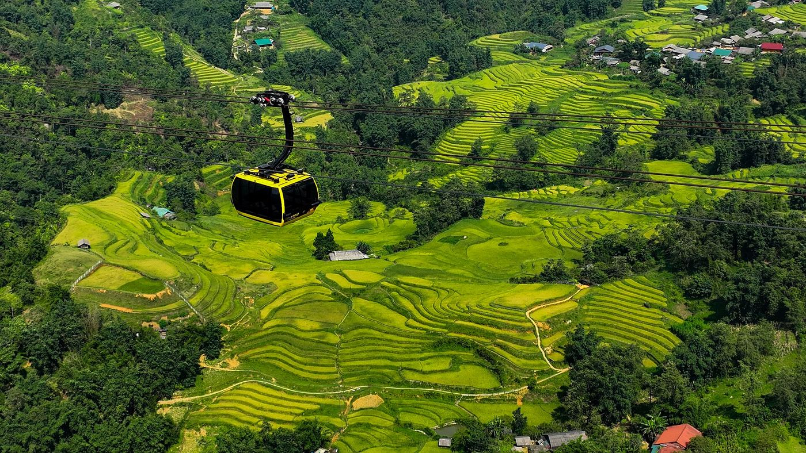
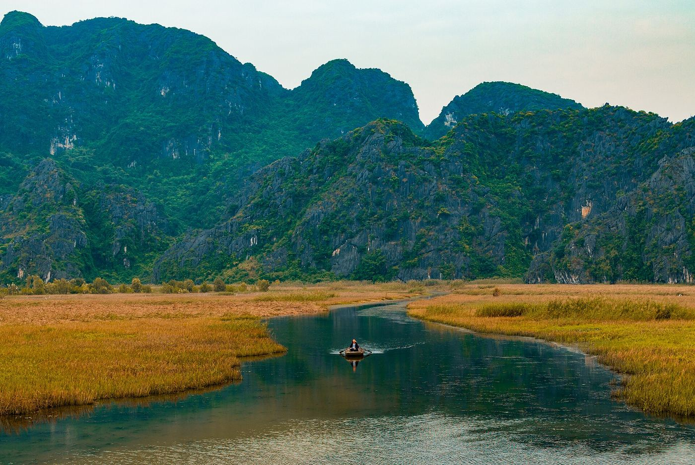
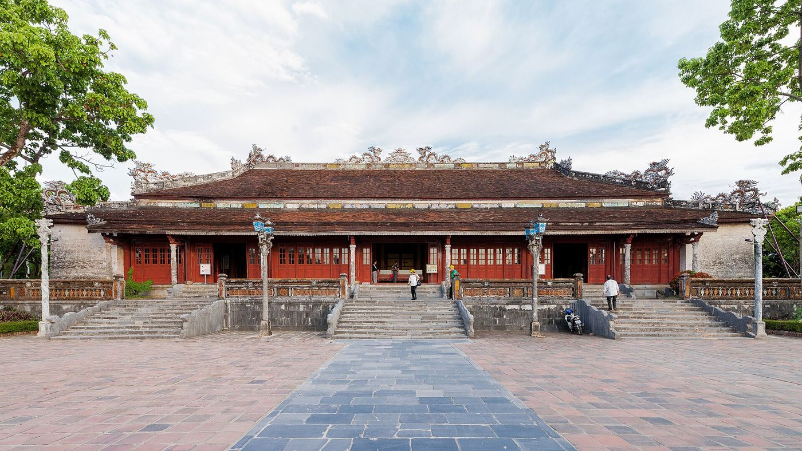
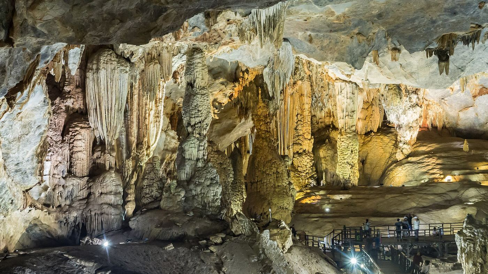
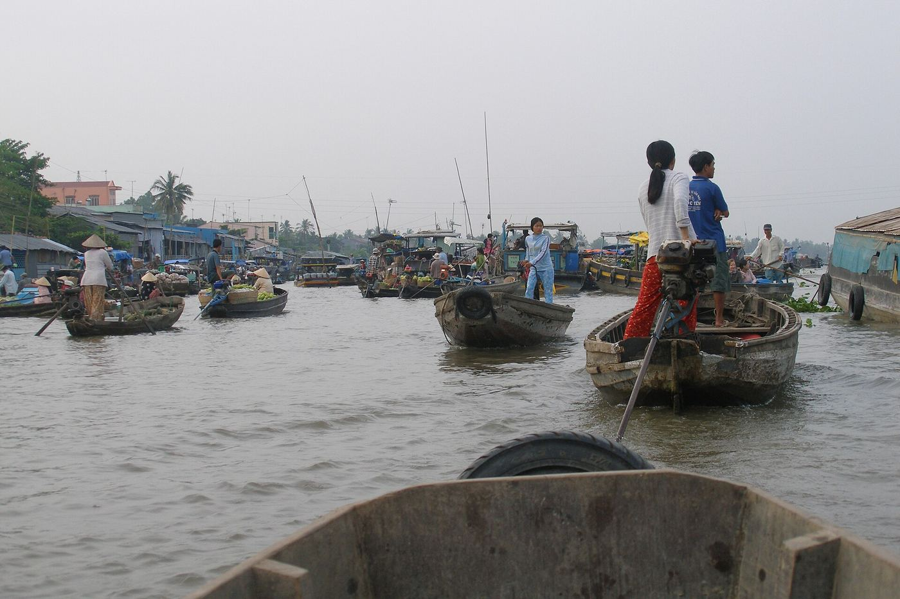
3 địa danh
Miền Bắc
Từ đỉnh Fansipan lộng gió đến vịnh Hạ Long huyền ảo, miền Bắc là sự giao thoa giữa thiên nhiên kỳ vĩ và chiều sâu văn hoá của bốn mùa rõ rệt.
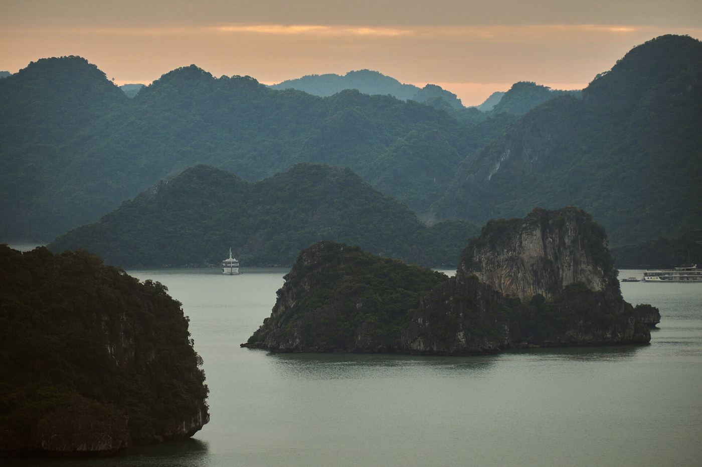
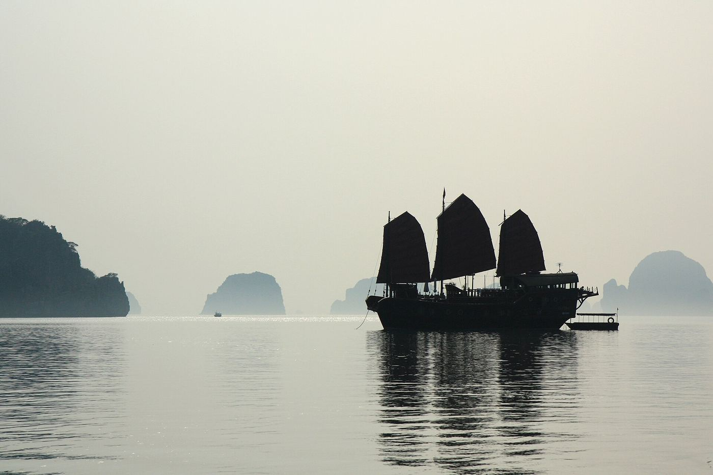
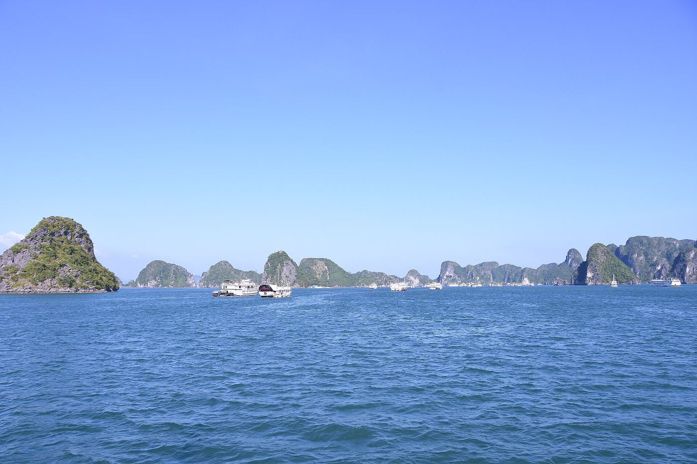
Vịnh Hạ Long
Quảng Ninh
Hàng nghìn đảo đá vôi sừng sững giữa làn nước xanh ngọc.
Vịnh Hạ Long có khoảng 1.600 hòn đảo và đảo đá vôi, tạo nên cảnh quan karst ngập nước độc đáo. Nơi đây được UNESCO công nhận là Di sản thiên nhiên thế giới và là một trong Bảy kỳ quan thiên nhiên mới của thế giới.
Du khách có thể ngủ đêm trên du thuyền, chèo kayak qua các làng chài, thăm những hang động lớn như Sửng Sốt, Thiên Cung hay ngắm bình minh trên vịnh.
- Thời điểm đẹp
- Tháng 9 – 11 và tháng 3 – 5
- Giá vé
- Vé tham quan vịnh khoảng 290.000đ (tham khảo)
- Di chuyển
- Từ Hà Nội đi cao tốc Hà Nội – Hạ Long khoảng 150 km, mất chừng 2,5 giờ bằng ô tô hoặc xe limousine.
Nên làm gì
- Du thuyền ngủ đêm
- Chèo kayak
- Thăm hang Sửng Sốt
- Ngắm bình minh trên vịnh
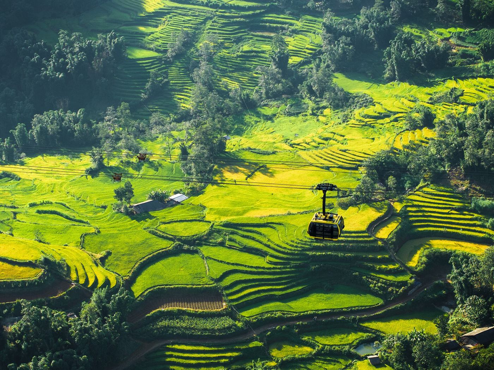
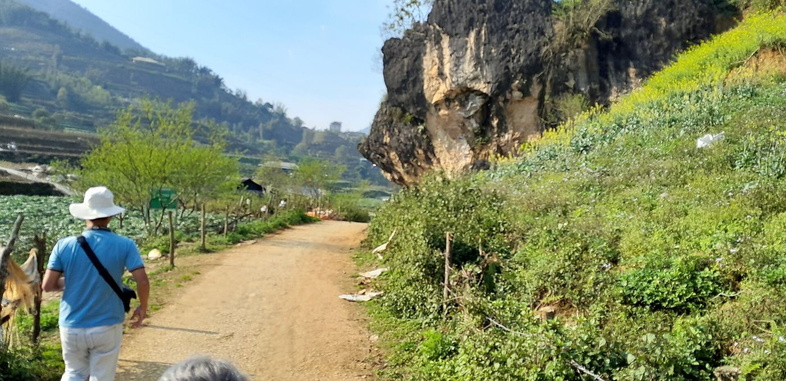
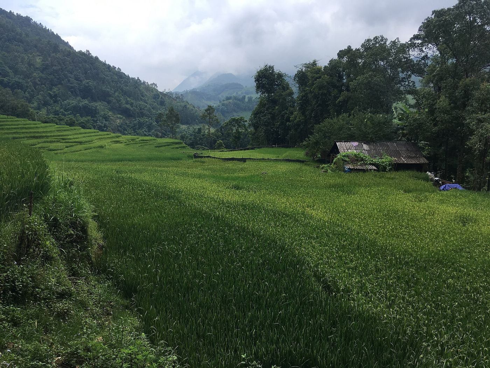
Sa Pa & Fansipan
Lào Cai
Ruộng bậc thang, sương mù và đỉnh núi cao nhất Đông Dương.
Sa Pa nằm ở độ cao khoảng 1.500 m, nổi tiếng với những thửa ruộng bậc thang uốn lượn quanh thung lũng Mường Hoa và bản sắc văn hoá của người H'Mông, Dao, Tày.
Fansipan cao 3.143 m được mệnh danh là 'nóc nhà Đông Dương'. Du khách có thể chinh phục bằng đường bộ hoặc đi cáp treo.
- Thời điểm đẹp
- Tháng 9 – 10 (lúa chín), tháng 3 – 5 (hoa nở)
- Giá vé
- Cáp treo Fansipan khoảng 800.000đ – 900.000đ (tham khảo)
- Di chuyển
- Đi tàu hoặc xe giường nằm từ Hà Nội đến Lào Cai, rồi di chuyển khoảng 35 km lên Sa Pa. Nay có cao tốc Hà Nội – Lào Cai rút ngắn thời gian.
Nên làm gì
- Trekking bản Cát Cát, Lao Chải
- Săn mây Fansipan
- Chợ phiên vùng cao
- Thưởng thức thắng cố, cá hồi
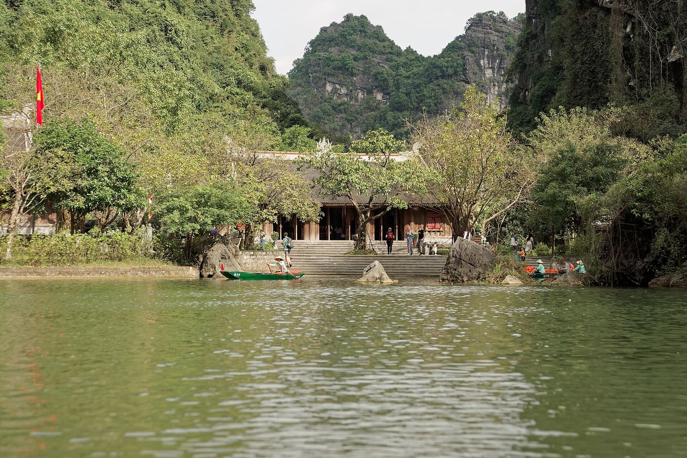
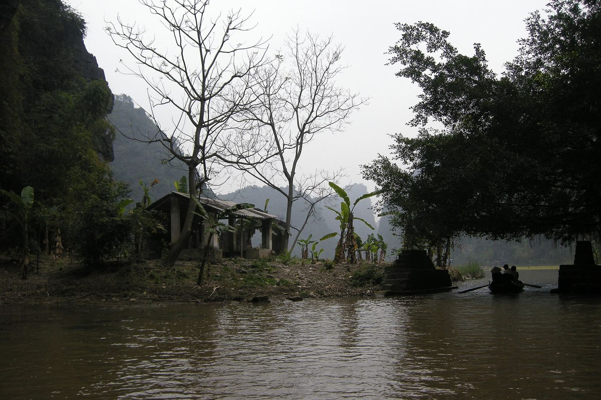
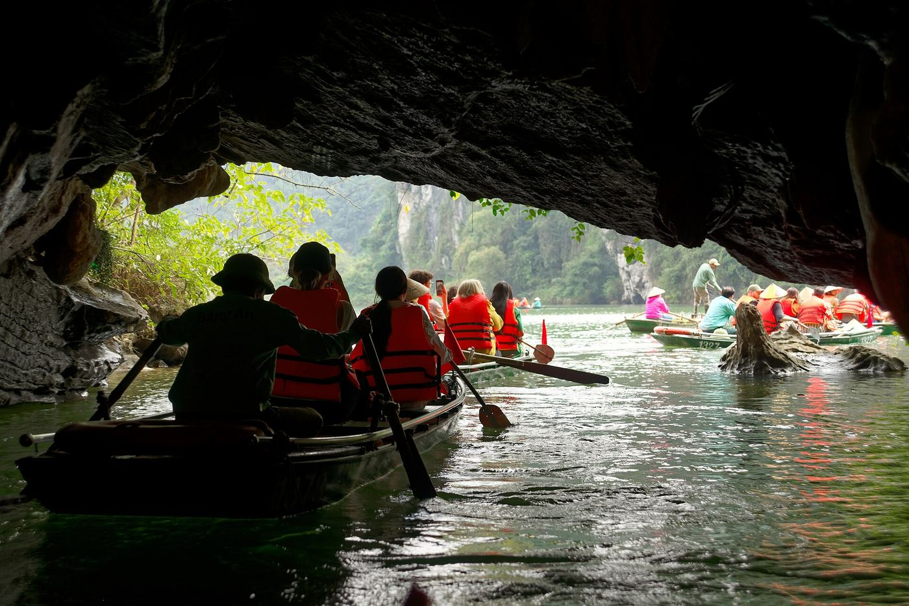
Tràng An – Ninh Bình
Ninh Bình
'Hạ Long trên cạn' với những dòng sông len qua hang núi đá vôi.
Quần thể danh thắng Tràng An là Di sản hỗn hợp đầu tiên của Việt Nam được UNESCO công nhận, kết hợp giá trị thiên nhiên, lịch sử và văn hoá.
Du khách ngồi thuyền chèo tay qua hệ thống hang xuyên thuỷ, ngắm núi đá vôi soi bóng xuống mặt nước, ghé các đền chùa cổ. Gần đó là cố đô Hoa Lư, Tam Cốc – Bích Động và chùa Bái Đính.
- Thời điểm đẹp
- Tháng 5 – 6 (lúa chín vàng) hoặc tháng 1 – 3
- Giá vé
- Vé thuyền Tràng An khoảng 250.000đ (tham khảo)
- Di chuyển
- Cách Hà Nội khoảng 95 km, đi ô tô hoặc tàu hoả đến ga Ninh Bình mất 2 giờ.
Nên làm gì
- Đi thuyền Tràng An
- Leo hang Múa
- Đạp xe Tam Cốc
- Thăm chùa Bái Đính
3 địa danh
Miền Trung
Dải đất miền Trung nắng gió lưu giữ cố đô, phố cổ, hang động kỳ vĩ và những bãi biển đẹp bậc nhất Đông Nam Á.
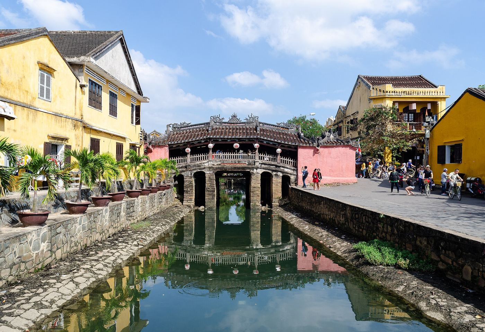
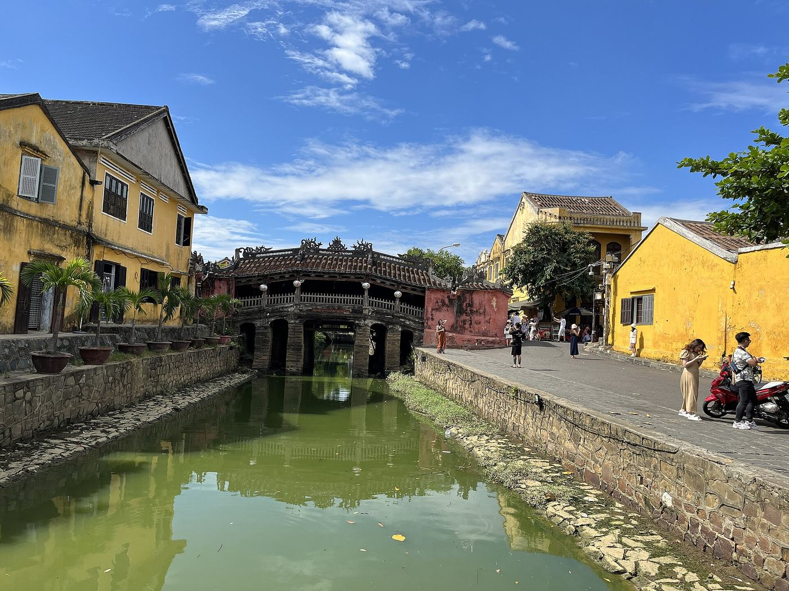
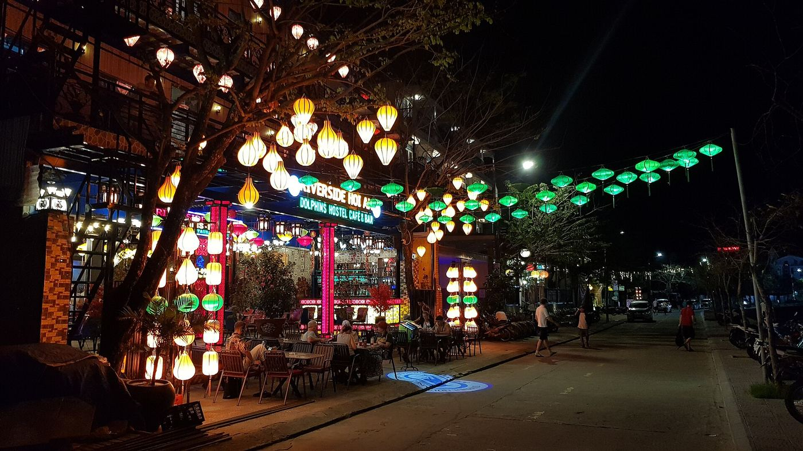
Phố cổ Hội An
Quảng Nam (nay thuộc Đà Nẵng)
Phố đèn lồng vàng ánh bên dòng sông Hoài thơ mộng.
Hội An từng là thương cảng sầm uất thế kỷ 16 – 17, nay còn giữ gần như nguyên vẹn những ngôi nhà cổ, hội quán, chùa Cầu. Đô thị cổ được UNESCO công nhận là Di sản văn hoá thế giới năm 1999.
Đêm rằm, phố tắt đèn điện, thả hoa đăng trên sông Hoài. Đây cũng là nơi may áo dài, thưởng thức cao lầu, mì Quảng, bánh mì Phượng.
- Thời điểm đẹp
- Tháng 2 – 4, tránh mùa mưa lũ tháng 10 – 11
- Giá vé
- Vé tham quan phố cổ khoảng 120.000đ (tham khảo)
- Di chuyển
- Cách sân bay Đà Nẵng khoảng 30 km, đi taxi hoặc xe đưa đón mất 45 phút.
Nên làm gì
- Thả đèn hoa đăng
- Thăm chùa Cầu
- Học nấu ăn
- Đạp xe làng rau Trà Quế
- Tắm biển An Bàng
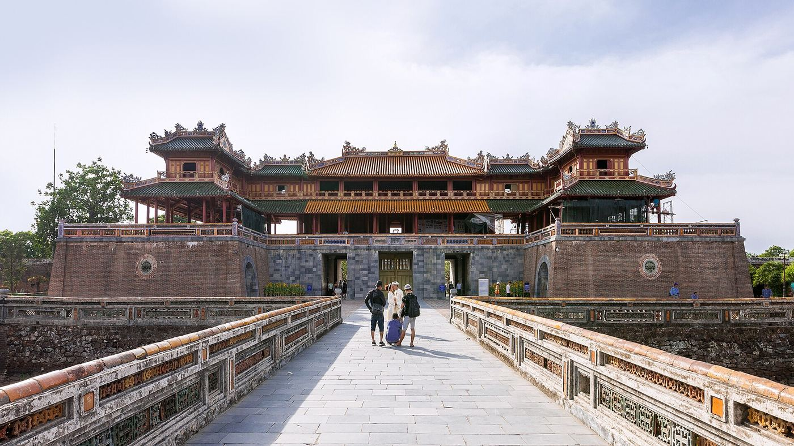
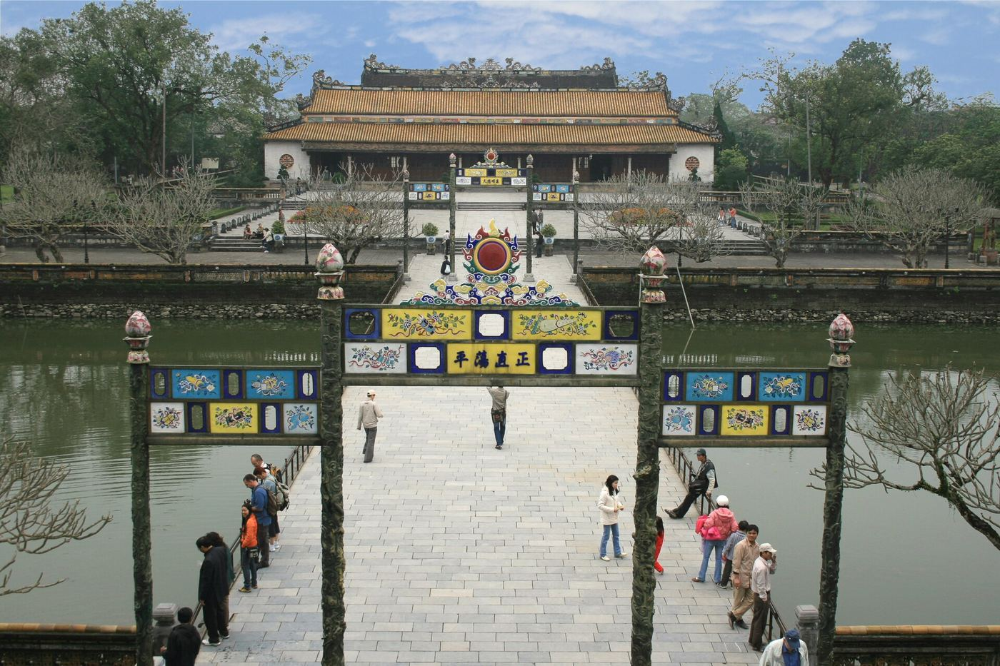
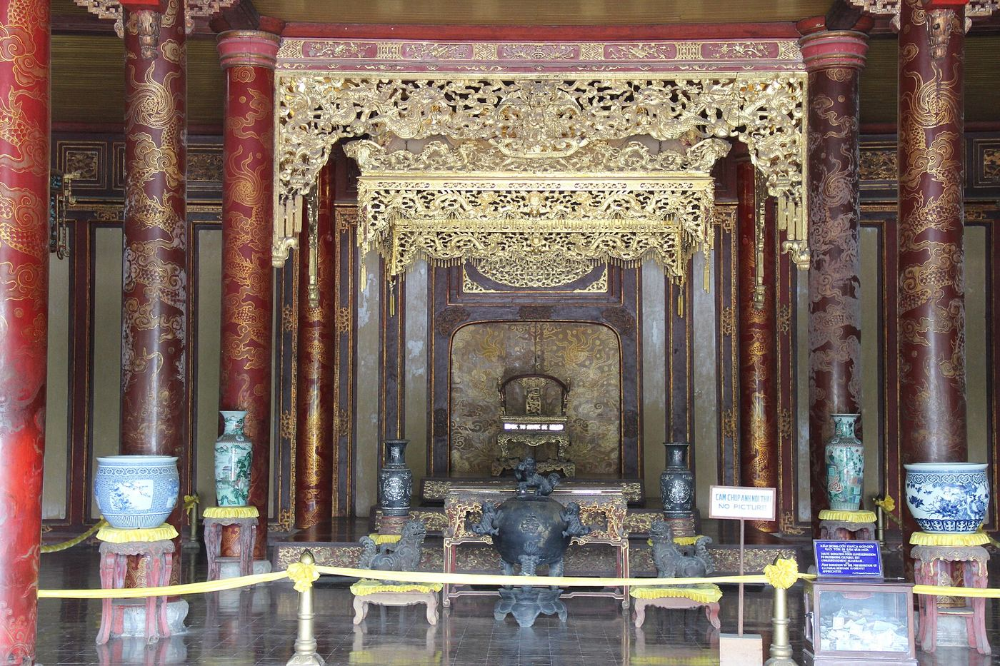
Cố đô Huế
Thừa Thiên Huế
Kinh thành triều Nguyễn trầm mặc bên dòng sông Hương.
Quần thể di tích cố đô Huế gồm Đại Nội, các lăng tẩm vua Nguyễn như Khải Định, Minh Mạng, Tự Đức cùng chùa Thiên Mụ. Năm 1993 nơi đây được UNESCO công nhận là Di sản văn hoá thế giới.
Huế còn nổi tiếng với nhã nhạc cung đình, áo dài tím và ẩm thực cung đình: bún bò Huế, bánh bèo, nem lụi.
- Thời điểm đẹp
- Tháng 1 – 4
- Giá vé
- Vé Đại Nội khoảng 200.000đ; vé combo nhiều điểm (tham khảo)
- Di chuyển
- Có sân bay Phú Bài (cách trung tâm 15 km), hoặc đi tàu Thống Nhất, hoặc xe qua đèo Hải Vân từ Đà Nẵng.
Nên làm gì
- Tham quan Đại Nội
- Thuyền rồng sông Hương
- Thăm lăng Khải Định
- Nghe ca Huế
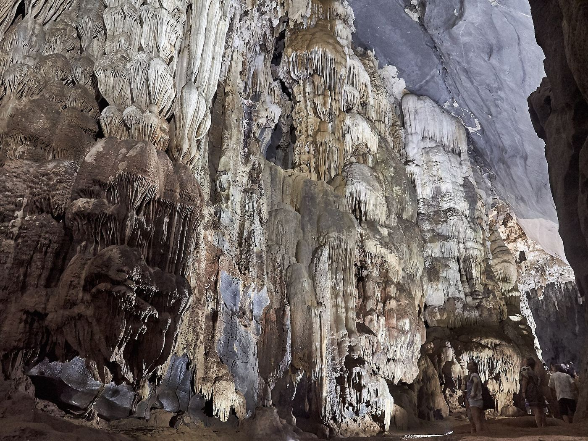
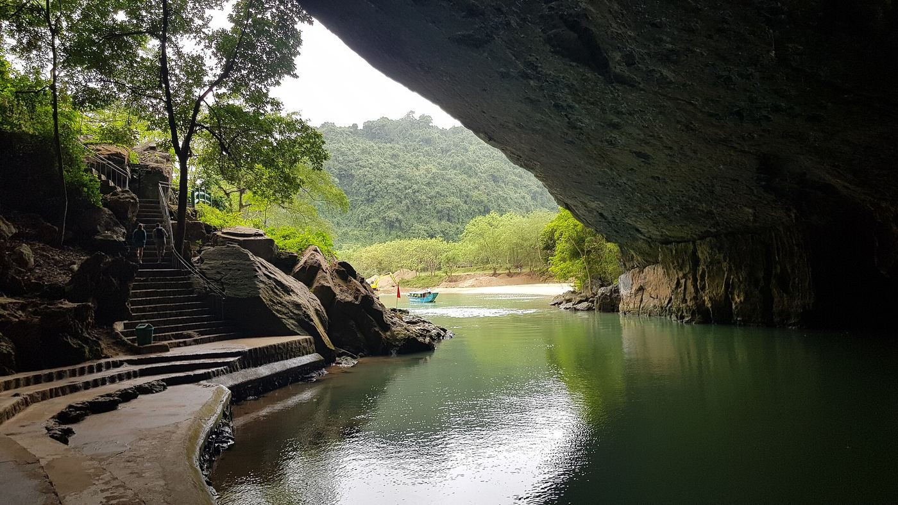
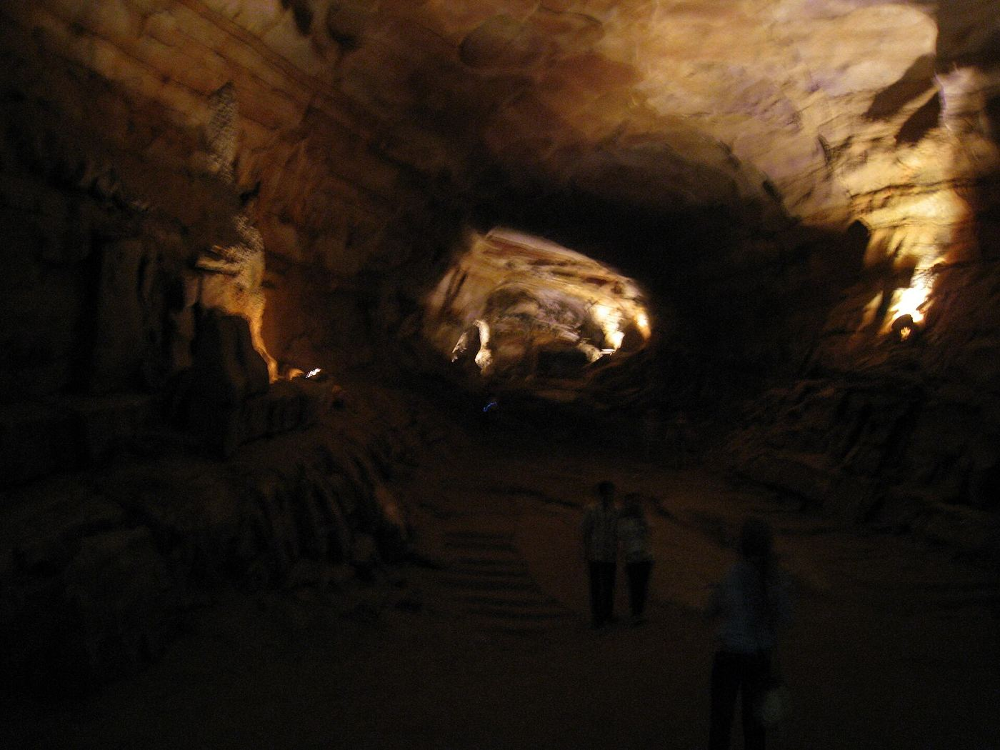
Phong Nha – Kẻ Bàng
Quảng Bình
Vương quốc hang động với Sơn Đoòng – hang lớn nhất thế giới.
Vườn quốc gia Phong Nha – Kẻ Bàng sở hữu hệ thống hang động karst cổ nhất châu Á. Hang Sơn Đoòng được xác nhận là hang động tự nhiên lớn nhất thế giới.
Ngoài Sơn Đoòng (cần đặt tour trước theo hạn ngạch), du khách có thể thăm động Phong Nha đi thuyền, hang Én, hang Tú Làn hay Suối Nước Moọc.
- Thời điểm đẹp
- Tháng 2 – 8
- Giá vé
- Động Phong Nha khoảng 150.000đ + thuyền (tham khảo)
- Di chuyển
- Từ sân bay Đồng Hới đi xe khoảng 50 km, mất khoảng 1 giờ.
Nên làm gì
- Đi thuyền vào động Phong Nha
- Trekking hang Én
- Zipline Sông Chày – Hang Tối
- Tắm bùn
3 địa danh
Miền Nam
Miền Nam trải rộng với đồng bằng sông Cửu Long trù phú, những hòn đảo hoang sơ và nhịp sống sôi động của Sài Gòn.
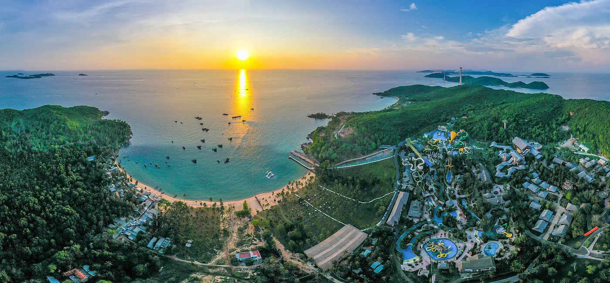
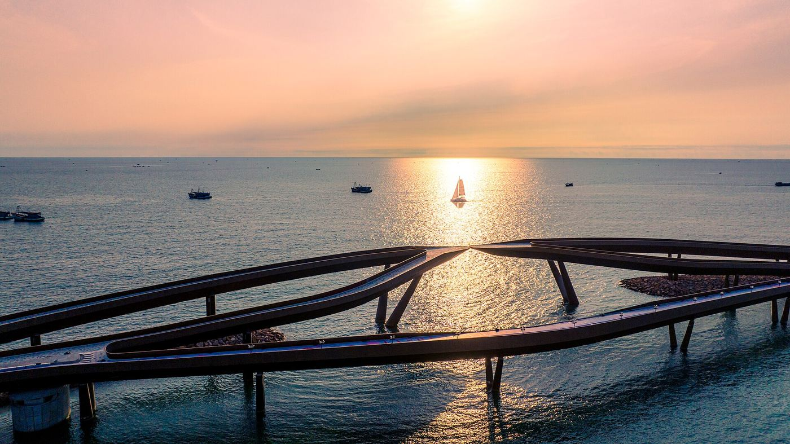
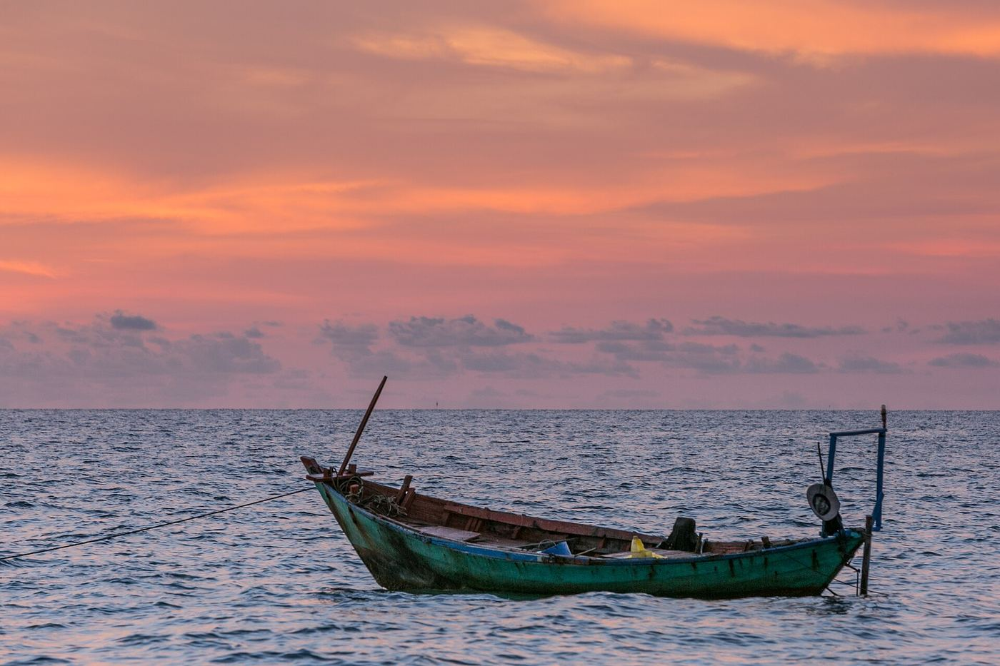
Đảo Phú Quốc
Kiên Giang (nay thuộc An Giang)
Đảo ngọc với bãi cát trắng, nước biển trong và hoàng hôn rực rỡ.
Phú Quốc là hòn đảo lớn nhất Việt Nam với bãi Sao, bãi Dài, Hòn Thơm và quần đảo An Thới. Phía bắc đảo là một khu dự trữ sinh quyển với rừng nguyên sinh.
Du khách có thể lặn ngắm san hô, đi cáp treo vượt biển dài nhất thế giới, ngắm hoàng hôn ở Dinh Cậu và thưởng thức nước mắm, hải sản, gỏi cá trích.
- Thời điểm đẹp
- Tháng 11 – 4 (mùa khô)
- Giá vé
- Cáp treo Hòn Thơm khoảng 600.000đ (tham khảo)
- Di chuyển
- Bay thẳng đến sân bay quốc tế Phú Quốc từ Hà Nội, Đà Nẵng, TP. Hồ Chí Minh.
Nên làm gì
- Lặn ngắm san hô
- Cáp treo Hòn Thơm
- Chợ đêm Dinh Cậu
- Vườn tiêu, nhà thùng nước mắm
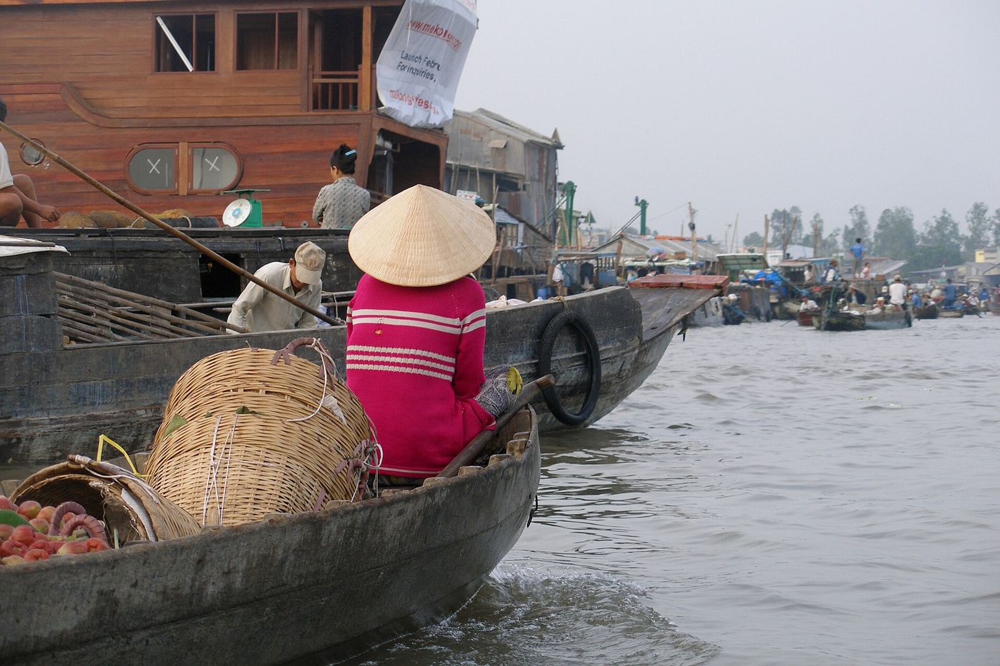
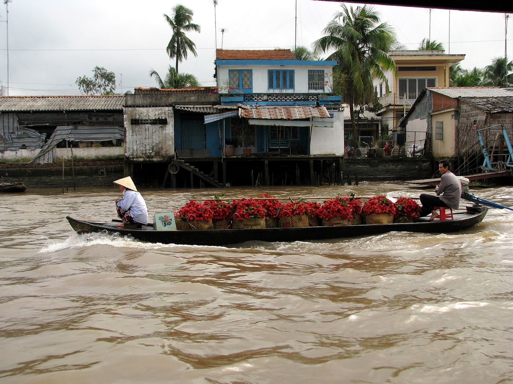
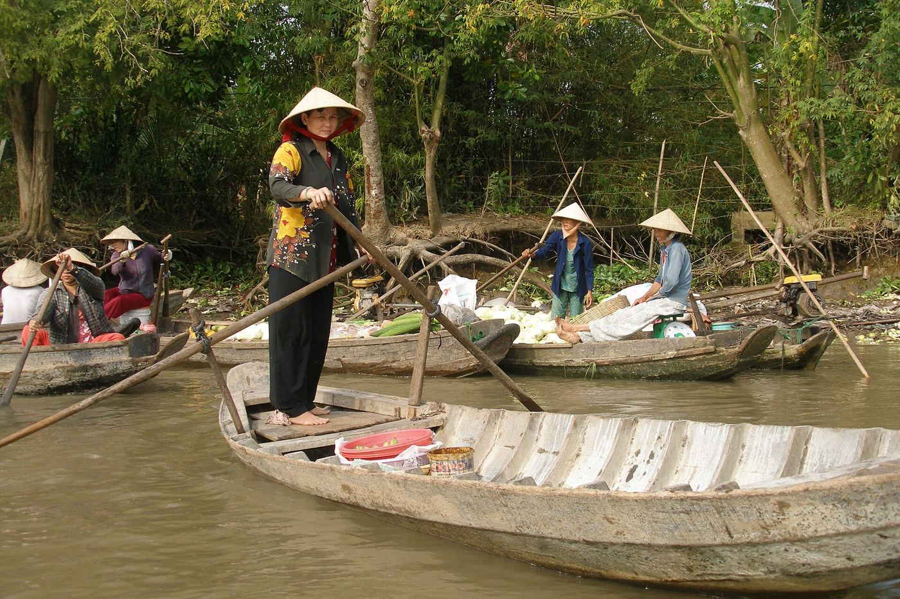
Miền Tây sông nước
Cần Thơ, Tiền Giang, Bến Tre...
Chợ nổi, vườn trái cây và kênh rạch chằng chịt.
Đồng bằng sông Cửu Long là vựa lúa, vựa trái cây của cả nước. Chợ nổi Cái Răng ở Cần Thơ họp từ sáng sớm với hàng trăm ghe xuồng bán nông sản.
Du khách đi xuồng ba lá len lỏi rạch dừa nước, nghe đờn ca tài tử, nếm kẹo dừa Bến Tre, trái cây tươi và các món bánh xèo, lẩu mắm.
- Thời điểm đẹp
- Tháng 8 – 11 (mùa nước nổi) hoặc tháng 12 – 4
- Giá vé
- Tour trong ngày từ Sài Gòn khoảng 400.000đ – 700.000đ (tham khảo)
- Di chuyển
- Cách TP. Hồ Chí Minh khoảng 170 km đến Cần Thơ, đi cao tốc Trung Lương – Mỹ Thuận khoảng 3 – 4 giờ.
Nên làm gì
- Chợ nổi Cái Răng
- Đi xuồng rạch dừa
- Thăm vườn trái cây
- Nghe đờn ca tài tử
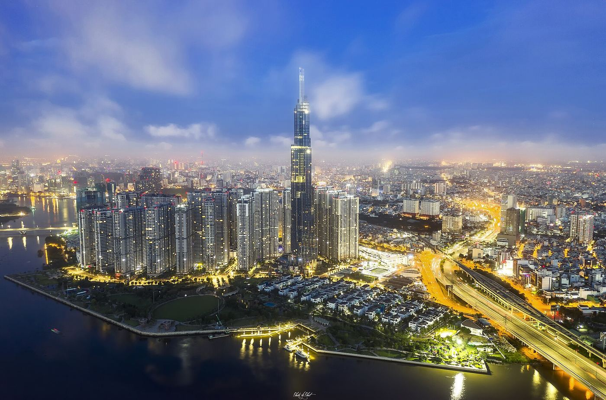
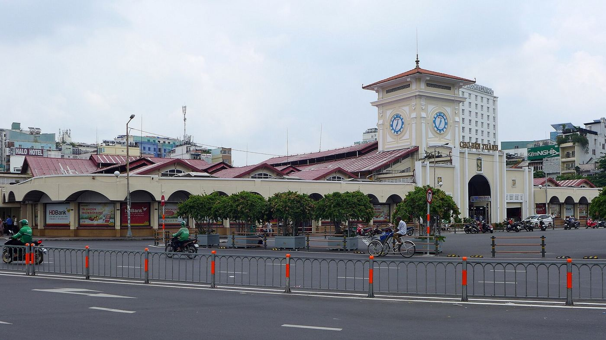
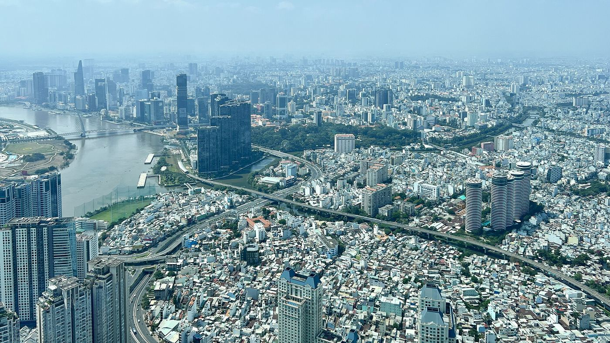
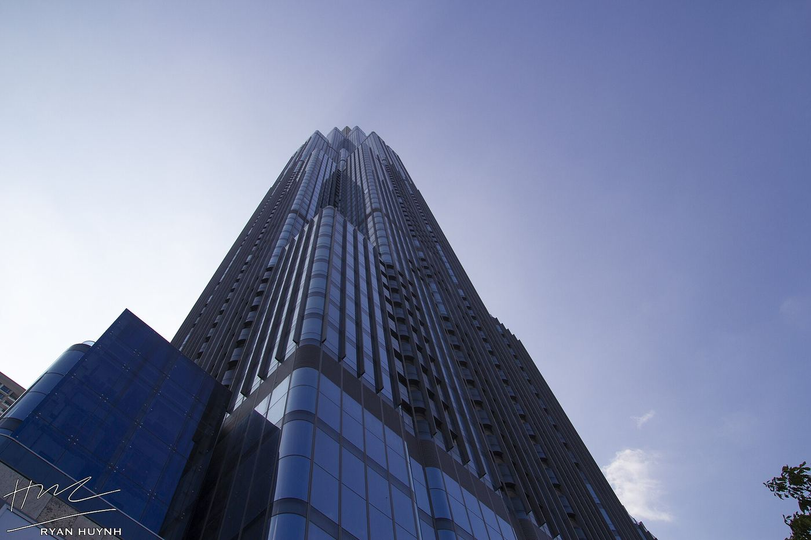
TP. Hồ Chí Minh
TP. Hồ Chí Minh
Thành phố năng động với kiến trúc Pháp và ẩm thực đường phố.
Sài Gòn có Nhà thờ Đức Bà, Bưu điện Trung tâm, Dinh Độc Lập, Chợ Bến Thành, phố đi bộ Nguyễn Huệ và những toà nhà chọc trời như Landmark 81.
Nơi đây là thiên đường ẩm thực: bánh mì, cơm tấm, hủ tiếu, cà phê sữa đá. Từ trung tâm có thể đi địa đạo Củ Chi hay Cần Giờ trong ngày.
- Thời điểm đẹp
- Tháng 12 – 4 (mùa khô)
- Giá vé
- Dinh Độc Lập khoảng 65.000đ (tham khảo)
- Di chuyển
- Sân bay Tân Sơn Nhất cách trung tâm khoảng 8 km; có metro số 1 và xe buýt.
Nên làm gì
- Dạo phố Tây Bùi Viện
- Tham quan Dinh Độc Lập
- Ăn đêm quận 4
- Địa đạo Củ Chi
Thư viện ảnh
Khoảnh khắc Việt Nam
“Đi một ngày đàng, học một sàng khôn.”Tục ngữ Việt Nam
Về dự án
Khám phá Việt Nam
Một trang web nhỏ với mong muốn giới thiệu vẻ đẹp đất nước đến mọi người.